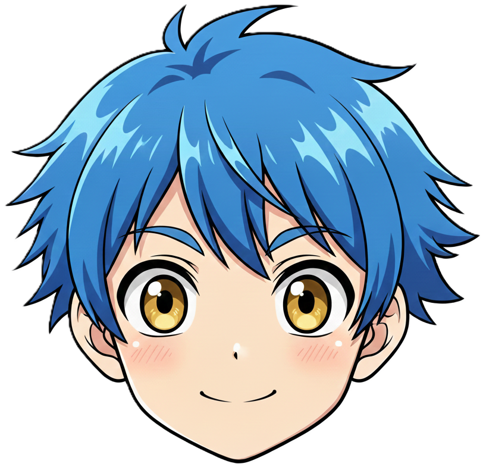
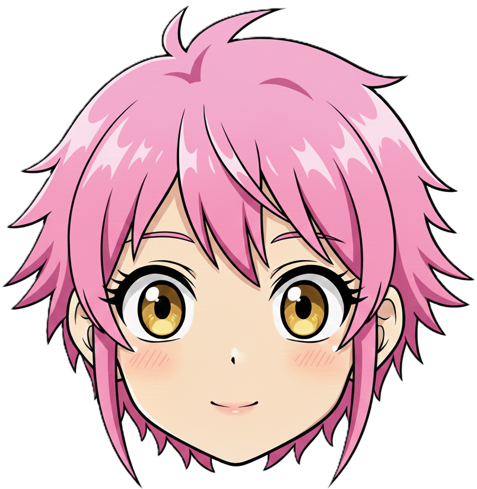
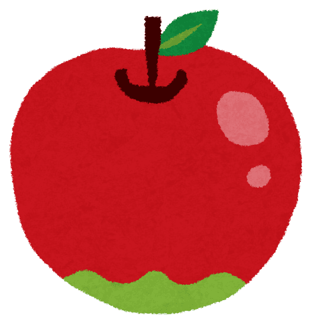
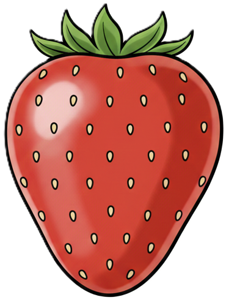
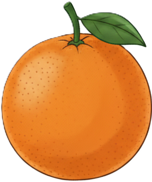
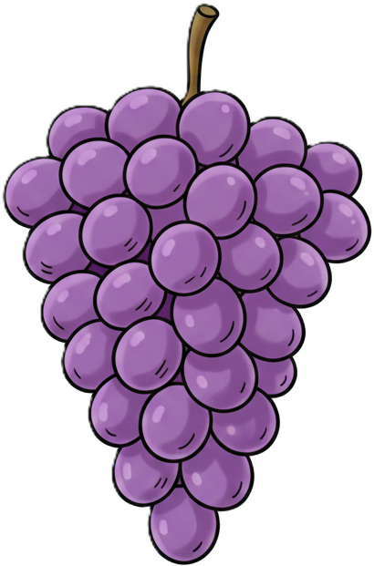

このゲームでは、カメラにうつったあなたの て をつかってフルーツをキャッチします。
むずかしさを えらんでね！
1Pのアバター


2Pのアバター
「ゲームスタート！」ボタンをおしてね。カメラの しようを きょか してね。
カメラとAIのじゅんびをしています。すこしまっててね。
かごが２つでてくるよ！1Pのかごは




ちがうフルーツをとるとライフがへっちゃうからきをつけて！
さいしゅうスコア: 0
★ ほしを こ ゲット！ ★